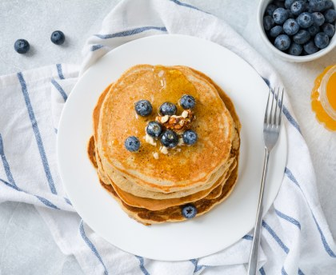

Temps de cuisson : 14 min
Difficulté : Très facile
Faire fondre le beurre, dans une casserole à feu doux ou dans un bol au micro-ondes.
Mettre la farine, la levure et le sucre dans un saladier. Mélanger et creuser un puits.
Ajouter ensuite les oeufs entiers et fouetter l'ensemble.
Incorporer le beurre fondu, fouetter puis délayer progressivement le mélange avec le lait afin d'éviter les grumeaux.
Laisser reposer la pâte au minimum 1 heure au réfrigérateur.
Dans une poêle chaude et légèrement huilée, faire cuire comme des crêpes, mais en les faisant plus petites. Réserver au chaud et déguster.